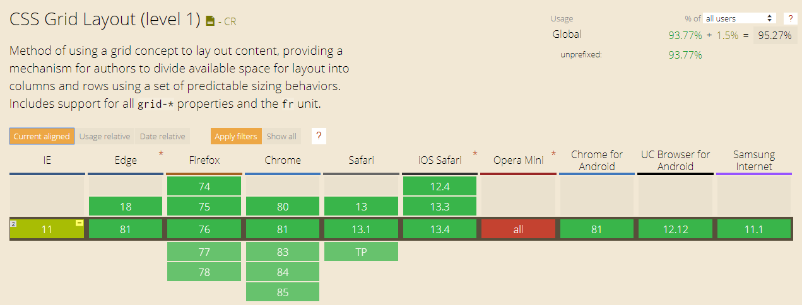

Grid Layout
CSS Grid Layout (aka “Grid”)
This CSS module defines a two-dimensional grid-based layout system, optimized for user interface design. In the grid layout model, the children of a grid container can be positioned into arbitrary slots in a predefined flexible or fixed-size layout grid.
Browser support
Terminology
Grid container - set of intersecting horizontal and vertical grid lines that divide the container grid space into grid areas into which grid elements can be placed.
Grid lines - The vertical and horizontal lines that divide the grid and separate the columns and rows.
Grid cell - A single unit of a CSS grid.
Grid area - Rectangular space surrounded by four grid lines. A grid area can contain any number of grid cells.
Grid track - The space between two grid lines. This space can be horizontal or vertical.
Grid row - A horizontal track of a grid.
Grid column - A vertical track of a grid.
Grid Container
- grid - forms a grid as a block;
- inline-grid - forms a grid as an inline block;
- subgrid - if your container is also an element (nested grid), then you can use this property to indicate that the sizes of the rows / columns are taken from the parent element, and not define your own;
.container {
display: grid | inline-grid | subgrid;
}
Explicit Grid
- grid-template-columns
- grid-tempate-rows
- grid-template-areas
Values:
- <track-size> - can be a fixed size, percent, or part of the free space in the grid (determined using a unit fr(fraction));
- <line-name> - an arbitrary name of your choice;
.container {
grid-template-columns: <track-size> ... | <line-name> <track-size> ...;
grid-template-rows: <track-size> ... | <line-name> <track-size> ...;
}
Examples
grid-template-rows: 50px 100pxgrid-template-columns: 90px 50px 120pxgrid-template-columns: 1fr 1fr 2frgrid-template-columns: 3rem 25% 1fr 2frMinimum and Maximum Grid Track Sizes
Tracks sizes can be defined to have a minimum and/or maximum size with the minmax() function.
grid-template-rows: minmax(100px, auto);
grid-template-columns: minmax(auto, 50%) 1fr 3em;
Repeating Grid Tracks
Define repeating grid tracks using the repeat() notation. This is useful for grids with items with equal sizes or many items.
grid-template-rows: repeat(4, 100px);
grid-template-columns: repeat(3, 1fr);grid-template-columns: 30px repeat(3, 1fr) 30px
Grid Gaps (Gutters)
- grid-column-gap
- grid-row-gap
The grid-column-gap and grid-row-gap properties create gutters between columns and rows. Grid gaps are only created in between columns and rows, and not along the edge of the grid container.
grid-row-gap: 20px;
grid-column-gap: 5rem;grid-gap: 100px 1em
grid-gap: 2rem
Positioning Items by Grid Line Numbers
Grid lines are essentially lines that represent the start of, the end of, or between column and row tracks. Each line, starting from the start of the track and in the direction of the grid, is numbered incrementally starting from 1.
grid-row-start: 2;
grid-row-end: 3;
grid-column-start: 2;
grid-column-end: 3;grid-row: 2;
grid-column: 3 / 4;
grid-area: 2 / 2 / 3 / 3;
Spanning Items Across Rows and Columns
Grid items span only one column and row track by default, but can span multiple row and/or column tracks using the same properties to position them.
grid-column-start: 1;
grid-column-end: 4;
grid-row-start: 1;
grid-row-end: 4;grid-row: 2 / 5;
grid-column: 2 / 4;grid-row: 2 / span 3;
grid-column: span 2;
Naming Grid Lines
Grid lines can be named when defining the grid with the grid-template-rows and grid-template-columns properties. Line names can then be referenced to position grid items.
grid-template-rows: [row-1-start] 1fr [row-2-start] 1fr [row-2-end];
grid-template-columns: [col-1-start] 1fr [col-2-start] 1fr [col-3-start] 1fr [col-3-end];grid-template-rows: [row-start row-1-start] 1fr [row-1-end row-2-start] 1fr [row-2-end row-end];
grid-template-columns: [col-start] 1fr [col-2-start] 1fr [col-3-start] 1fr [col-end];Positioning Items by Line Names
With named grid lines, items can be positioned by line names and numbers.
grid-row-start: row-2-start;
grid-row-end: row-end;
grid-column-start: col-2-start;
grid-column-end: col-end;grid-row: row-2-start / row-end;
grid-column: col-2-start / col-end;

Naming and Positioning Items by Grid Lines with the Same Name
With named grid lines, items can be positioned by line names and numbers.
grid-template-rows: repeat(3, [row-start] 1fr [row-end]);
grid-template-columns: repeat(3, [col-start] 1fr [col-end]);grid-row: row-start 2 / row-end 3;
grid-column: col-start / col-start 3;
Naming and Positioning Items by Grid Areas
Like grid line names, grid areas can also be named with the grid-template-areas property. Names can then be referenced to position grid items.
grid-template-areas: "header header"
"content sidebar"
"footer footer";
grid-template-rows: 150px 1fr 100px;
grid-template-columns: 1fr 200px;grid-row-start: header;
grid-row-end: header;
grid-column-start: header;
grid-column-end: header;grid-row: footer;
grid-column: footer;
grid-area: sidebar;
Implicit Grid
- grid-auto-rows
- grid-auto-columns
- grid-auto-flow
An implicit grid is created when a grid needs to position items outside of the explicit grid because there isn’t enough space for items in the explicitly defined tracks or you decide to position something outside of the explicit grid. Those items are then auto-placed in the implicit grid. The implicit grid can be defined using the grid-auto-rows, grid-auto-columns, and grid-auto-flow properties.
grid-template-rows: 70px;
grid-template-columns: repeat(2, 1fr);
grid-auto-rows: 140px;grid-auto-flow: row
grid-auto-flow: column
grid-template-columns: 30px 60px;
grid-auto-flow: column;
grid-auto-columns: 1fr;Implicitly Named Grid Areas
Grid lines can generally be named whatever you’d like, but assigning names ending in -start and -end comes with added benefits—they implicitly create named grid areas, which can be referenced for positioning.
grid-template-rows: [outer-start] 1fr [inner-start] 1fr [inner-end] 1fr [outer-end];
grid-template-columns: [outer-start] 1fr [inner-start] 1fr [inner-end] 1fr [outer-end];
grid-area: innerImplicitly Named Grid Lines
Implicitly named grid lines work in reverse to implicitly named grid areas—naming grid areas implicitly assigns names to grid lines.
grid-template-areas: "header header"
"content sidebar"
"footer footer";
grid-template-rows: 80px 1fr 40px;
grid-template-columns: 1fr 200px;grid-row-start: header-start;
grid-row-end: content-start;
grid-column-start: footer-start;
grid-column-end: sidebar-end;
Layering Grid Items
Grid items can be layered/stacked by properly positioning them and assigning z-index when necessary.
.item-1,
.item-2 {
grid-row-start: 1;
grid-column-end: span 2;
}
.item-1 { grid-column-start: 1; z-index: 1; }
.item-2 { grid-column-start: 2 }grid-row-start: header-start;
grid-row-end: content-end;
grid-column-start: content-start;
grid-column-end: sidebar-start;
z-index: 1;
Aligning Grid Items (Box Alignment)
CSS’s Box Alignment Module complements CSS Grid to allow items to be aligned along the row of column axis. justify-items and justify-self align items along the row axis, and align-items and align-self align items along the column axis. justify-items and align-items are applied to the grid container and support the following values:
- auto
- normal
- start
- end
- center
- stretch
- baseline
- first baseline
- last baseline
.grid {
grid-template-rows: 80px 80px;
grid-template-columns: 1fr 1fr;
grid-template-areas: "content content"
"content content";
}
.item { grid-area: content }justify-items: startjustify-items: centerjustify-items: endjustify-items: stretchalign-items: startalign-items: centeralign-items: endalign-items: stretchIndividual items (properties)
Individual items can be self-aligned with the align-self and justify-self properties. These properties support the following value:
- auto
- normal
- start
- end
- center
- stretch
- baseline
- first baseline
- last baseline
.item-1 { justify-self: start }
.item-2 { justify-self: center }
.item-3 { justify-self: end }.item-1 { align-self: start }
.item-2 { align-self: center }
.item-3 { align-self: end }Aligning Grid Tracks
Grid tracks can be aligned relative to the grid container along the row and column axes. align-content aligns tracks along the row axis and justify-content along the column axis. They support the following properties:
- normal
- start
- end
- center
- stretch
- space-around
- space-between
- space-evenly
- baseline
- first baseline
- last baseline
.grid {
width: 100%;
height: 300px;
grid-template-columns: repeat(4, 45px);
grid-template-rows: repeat(4, 45px);
grid-gap: 0.5em;
justify-content: start;
}justify-content: startjustify-content: end;justify-content: center;justify-content: space-around;justify-content: space-between;justify-content: space-evenly;align-content: start;align-content: end;align-content: center;align-content: space-around;align-content: space-between;align-content: space-evenly;